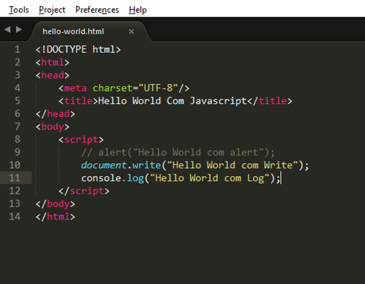

Conheça sobre importantes linguagens da área de TI
Você irá aprender como criar sites e estilizá-los com CSS
Aproveite e coloque esses conhecimentos em prática
Introdução ao html

HTML (Hyper Text Markup Language) é uma Linguagem de Marcação de Hipertexto utilizada para criação de páginas da Web. Essa é a linguagem que o seu navegador (Browser) decodifica para exibir as páginas.
As páginas criadas em html são visualizadas pelos navegadores
O HTML é baseado no conceito de Hipertexto. Hipertexto são conjuntos de elementos – ou nós – ligados por conexões. Estes elementos podem ser palavras, imagens, vídeos, áudio, documentos etc.
Hipertexto pode ser definido como todo o conteúdo o qual se encontra inserido em um documento para a web, sendo que sua principal característica seria a possibilidade de se interligar a outros documentos também na web.
Evolução do html
Desde a invenção da web em 1992 por Tim Berners-Lee, a HTML evoluiu a cada versão lançada, sendo a versão mais atual a HTML5.
Introdução ao CSS: O que é CSS e para que serve?
CSS (Cascading Style Sheets — Folhas de Estilos em Cascata) é uma extensão da HTML, uma linguagem de estilo, ou seja, fazendo o uso dessa linguagem é possível definir como o conteúdo dos elementos HTML serão apresentados na página da Web. Essa extensão foi incorporada à linguagem HTML a partir de sua quarta versão em 1997.
O CSS3 é a segunda versão da linguagem CSS.
Separar o conteúdo do documento HTML de sua formatação.
Benefícios do CSS
Controle do layout de diversos documentos utilizando apenas uma folha de estilos.
Maior precisão no controle do layout e design
Aplicação de diferentes layouts para adaptação do conteúdo e design em diferentes formas de apresentação (impressoras, telas de diferentes tamanhos, etc.)
W3C
O W3C (World Wide Web Consortium), criado em outubro de 1994 por Tim Berners-Lee, é um consórcio internacional formado por empresas, instituições, pesquisadores, desenvolvedores e público em geral. A finalidade desse consórcio é desenvolver a web a seu potencial máximo, criando normas, especificações e padronizações que se aplicam aos mais diversos segmentos e setores da web.
Galeria
Onde é possível aprender mais sobre HTML e CSS?
Acessando esses dois links abaixo você aprenderá mais sobre o HTML e CSS e também como utilizar: